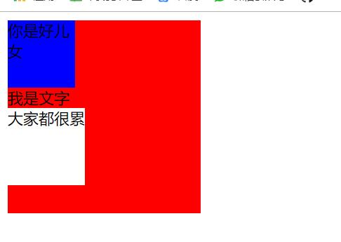

原文出处:本文由博客园博主心悦君兮君不知-睿提供。
原文连接:https://www.cnblogs.com/ruigege0000/p/11863694.html
原文连接:https://www.cnblogs.com/ruigege0000/p/11863694.html
一、伪元素选择器
1.什么是伪元素选择器
伪元素选择器作用给指定标签的内容前面添加一个子元素，或者给指定标签的内容后面添加一个子元素。
2.格式：
标签名称::before{
属性名称：值；
}
给指定标签的内容前面添加一个子元素
标签名称::after{
属性名称:值；
}
给指定标签的内容后面添加一个子元素
我们举个例子：
div{
width:200px;
height: 200px;
background-color: red;
}
/*p{*/
/*width: 50px;*/
/*height: 50px;*/
/*background-color: pink;*/
/*}*/
div::before{
content:"你是好儿女";
width:70px;
height: 70px;
background-color: blue;
display:block;/*如果不加这个显示的方式，那么上面设置宽高就不会生效*/
}
div::after{
content:"大家都很累";
width: 80px;
height: 80px;
display: block;
background-color: white;
}
..............省略代码...........
<div>
<!--<p>爱你</p>-->
我是文字
<!--<p>不爱你</p>-->
</div>

注意：指定添加的子元素中还可以添加一个属性
visibility:hidden;我们这个伪元素中的内容就会隐藏起来。
二、清除浮动方式五
1.
.box1{
background-color: red;
/*border:1px white solid;*/
}
.box2{
background-color: green;
/*border:1px white solid;*/
}
.box1 p{
width:100px;
background-color: blue;
}
.box2 p{
width:100px;
background-color: red;
}
p{
float:left:
}
.box1::after{
content:"";/*设置子元素为空*/
display:block;
height: 0;/*不占用空间*/
visibility: hidden;
clear:both;/*这个很重要*/
}
</style>
</head>
<body>
<div class="box1">
<p>我是文字1</p>
<p>我是文字2</p>
<p>我是文字3</p>
</div>
<div class="box2">
<p>我是文字4</p>
<p>我是文字5</p>
<p>我是文字6</p>
</div>
三、源码：
D136_PseudoElementSelector.htmlD137_ClearFloatFive.html
地址:
https://github.com/ruigege66/HTML_learning/blob/master/D136_PseudoElementSelector.html
https://github.com/ruigege66/HTML_learning/blob/master/D137_ClearFloatFive.html
2.CSDN：https://blog.csdn.net/weixin_44630050（心悦君兮君不知-睿）
3.博客园：https://www.cnblogs.com/ruigege0000/
4.欢迎关注微信公众号：傅里叶变换，个人账号，仅用于技术交流，后台回复“礼包”获取Java大数据学习视频礼包